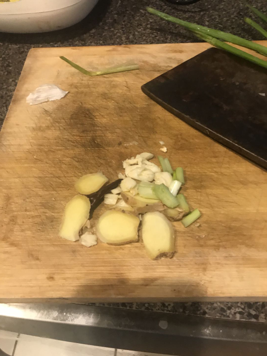
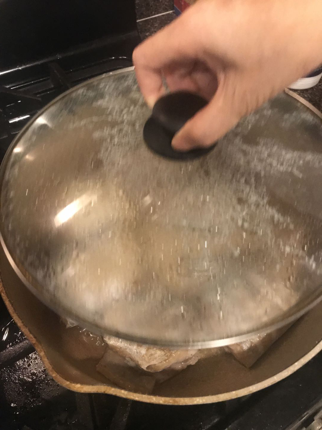
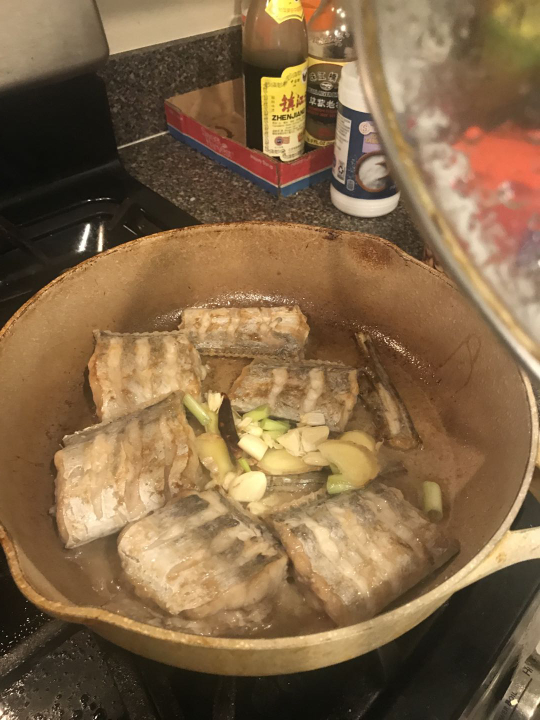
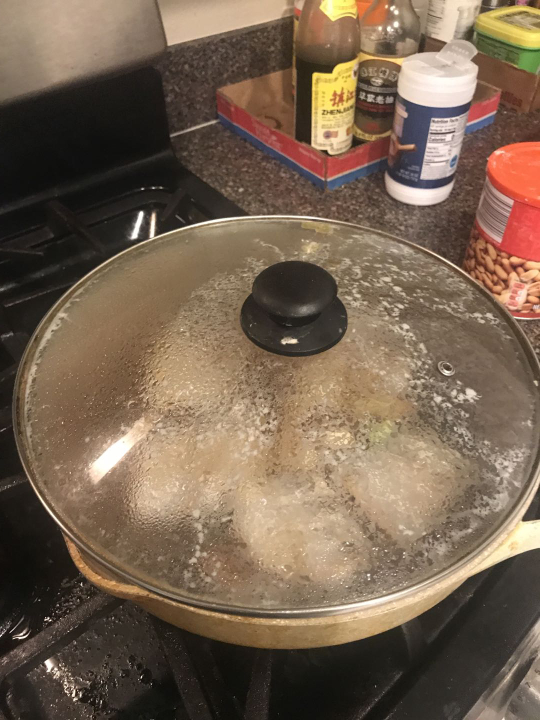
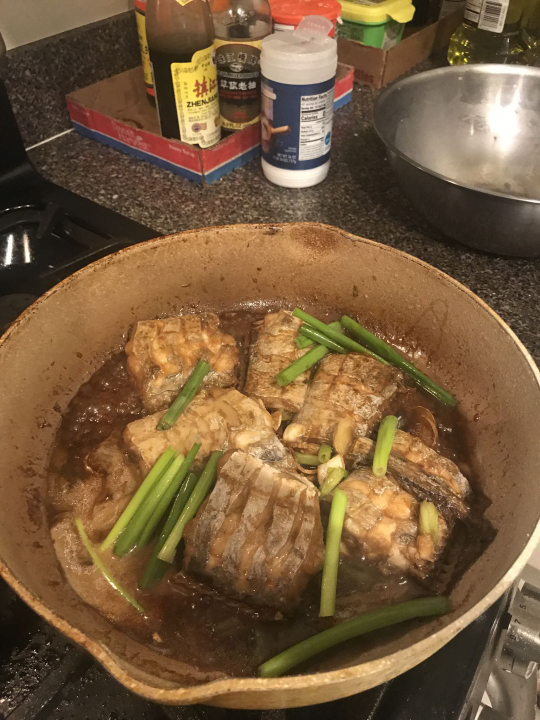
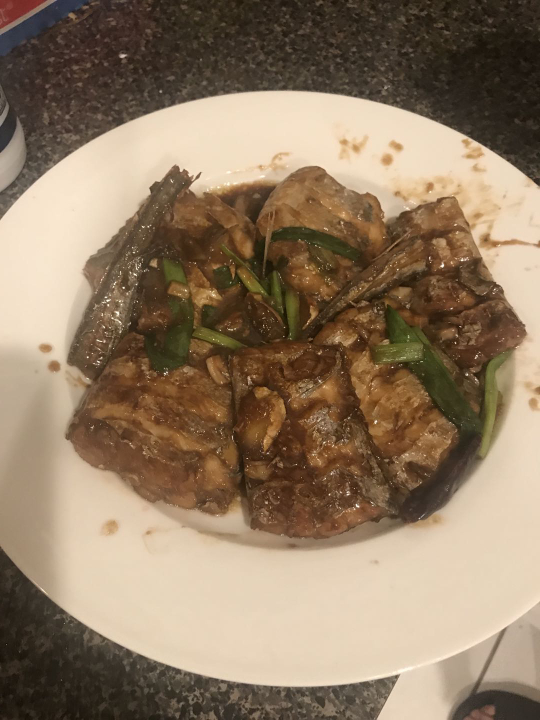

Dad is making this with Belt Fish, which are kind of ugly dudes, but I think you could probably re apply this recipe to like any kind of fish, to be honest. Genuinely, I think this is the flavor profile he uses for every food ever, but especially with fish-- so this is a one-size-fits-all recipe.
| Ingredient | Approximate Amount |
|---|---|
| Belt Fish | However Much You Got From The Store |
| Garlic | 3 Cloves |
| Ginger | A Little |
| Green Onion | 2 stalks |
| Cooking Wine | 2x the amount of Soy Sauce |
| Light Soy Sauce | 1/2 of the amount of cooking wine |
| Salt | A Sprinkle |
| Sugar | A Sprinkle |
- Wash the fish and cut into chunks, slicing slits into them
- Cut up garlic, ginger, green onion

- Cover a frying pan bottom with oil
- Fry until the sides are golden brown
- Cover the pan while the fish fries

- Put the ginger, garlic, and the bottom parts green onion into the pan with the fish

- Add cooking wine, soy sauce, salt, and sugar
- Cover and let it simmer for 5-10 minutes on medium.

- Add the green onion into the pan

- Cook for 2-3 more minutes
- Serve!
